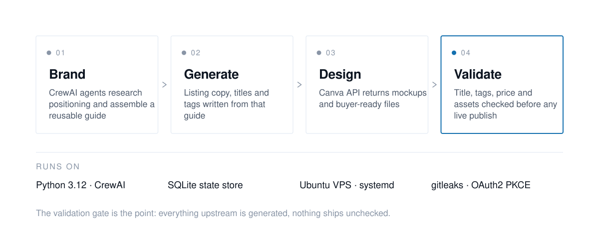

Enterprise IT support,
systems, and automation.
I keep the technology people depend on working — and I automate the parts that should never have been manual.
Built, documented, and open to inspection.
Each one is written up the way I would hand it to a colleague: what the problem was, what I did, and what the evidence says.

AI product pipeline
An autonomous multi-agent pipeline that researches a brand, writes listings, generates mockups and publishes over OAuth — with credential scanning, validation gates and auditable state. Runs unattended on a VPS.
Python · CrewAI · Anthropic API · SQLite · systemd
Authentication log analysis
Windows authentication logs into Splunk, SPL queries grouping failed logons by source and account, thresholds tuned to cut noise, and the triage path written up so someone else can repeat it.
Splunk · SPL · Windows Security logs · Event ID 4625
Phishing response walkthrough
A phishing-to-malware scenario worked end to end: user report, host indicator review, containment decisions, and an incident summary written for people who were not in the room.
Sysinternals · Windows Event Logs · containment
Access control workflows
Access-request, recovery and MFA scenarios documented with the decisions that matter — who approves, what proves identity, what least privilege resolves to, and what gets recorded.
Active Directory · MFA policy · least privilegeFour things I get asked for.
Systems and end-user support
Frontline and escalated support for staff in high-demand institutional environments — Windows endpoints, peripherals, access problems, and the long-tail issues that never match a script.
Microsoft 365 and identity
Account lifecycle, group membership, licensing, mailbox and Teams administration, MFA enforcement, and least-privilege access reviews in Active Directory.
Service management
ITIL 4 practices applied to the ordinary stuff: incident and request handling, queue hygiene, knowledge articles people reuse, and handoffs that survive a shift change.
Scripted and AI workflows
Python and shell automation for repetitive work, plus production AI workflows with real guardrails — credential isolation, validation gates, retry logic, and auditable state.
Five years in rooms that cannot go down.
I have spent five plus years in enterprise IT at Columbia University and NYC Health + Hospitals — environments where downtime is not an inconvenience.
My work sits where support, administration and process meet: keeping endpoints and accounts healthy in Microsoft 365 and Active Directory, running requests through ITIL 4 practices, and replacing repetitive work with automation I can audit. More about how I work.
- Based
- New York, NY
- Experience
- 5+ years enterprise IT
- Certified
- CompTIA Security+
Got a system that needs a hand?
Based in New York and open to conversations about enterprise IT support, systems and identity administration, service management, and automation work.